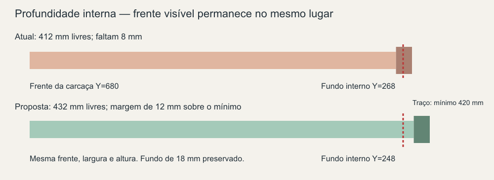
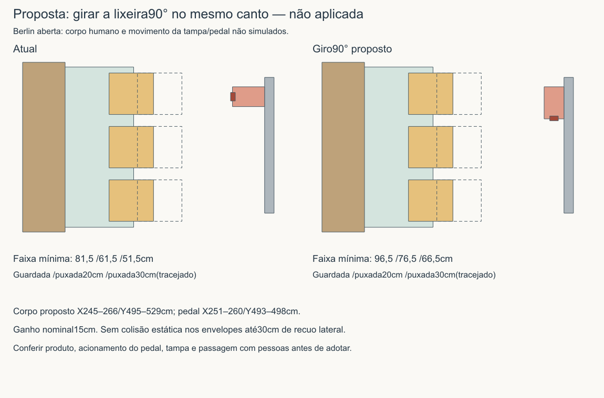

21/10/2026, São Paulo. Medições feitas no projeto R42 e pesquisa documental/comercial. A R42 foi preservada. A solução do escritório foi construída num estudo FreeCAD separado; o giro da lixeira é uma proposta ilustrada, ainda não aplicada ao modelo principal. Não houve medição física, compra, envio de orçamento ou contato com terceiros.
| Conjunto | Espaço livre no modelo | Mínimo do produto | Resultado |
|---|---|---|---|
| 4 do roupeiro | 550 mm | 520 mm | 30 mm acima do mínimo de profundidade |
| 3 da cozinha | 572 mm | 520 mm | 52 mm acima do mínimo de profundidade |
| 2 do escritório, atual | 412 mm | 420 mm | Faltam 8 mm |
| Escritório, variante estudada | 432 mm | 420 mm | 12 mm acima do mínimo, após alongar a traseira em 20 mm |
A medição parte da frente da carcaça, sem contar a frente decorativa. No escritório, contar essa frente produziria um falso encaixe. A variante aumenta a profundidade externa de 450 para 470 mm, mantendo frente visível, largura, altura e capacidade de armazenamento. O volume acrescentado não intersecta os demais sólidos ensaiados. O arquivo foi salvo e reaberto.
Abrir estudo FreeCAD do escritório · Método, verificações e limites · Nove medições individualizadas

Profundidade suficiente não fecha a instalação. A gaveta superior do escritório deixa somente 1 mm acima da lateral até o tampo; não está assegurada a regulagem de +3 mm. Perfil, engates, fundo, recortes e conjunto vertical precisam compatibilização. Não reduzir a altura útil ou encurtar as gavetas para esconder essa pendência.
Com a mesa aberta e três cadeiras laterais, o ponto mais estreito está junto ao pedal da lixeira. Girar a lixeira 90° mantendo o mesmo canto recupera 15 cm nominais, sem mudar a mesa, o sofá ou o banco.
| Configuração aberta | Cadeiras guardadas | Puxadas 20 cm | Puxadas 30 cm |
|---|---|---|---|
| Lixeira atual | 81,5 cm | 61,5 cm | 51,5 cm |
| Lixeira girada — proposta | 96,5 cm | 76,5 cm | 66,5 cm |
São faixas entre envelopes estáticos, com inserção hipotética de 26 cm das cadeiras. Não representam uma pessoa sentada ou andando. A tampa, o pedal e a abertura real da geladeira continuam sem simulação validada. Na mesa fechada, a cadeira próxima ao sofá tem 24 cm atrás; puxada 20 cm deixa apenas 4 cm e, a 30 cm, colide. O acesso lateral ao assento precisa de teste.

Conferência completa da circulação · Cenários medidos
As ofertas consultadas na Floresta informam par de guias e par de engates para os dois tamanhos: 500 mm, R$ 75,11 Pix, e 400 mm, R$ 66,71 Pix. Sete kits de 500 e dois de 400 somam R$ 659,19, antes de frete. Preço e estoque dependem da região; não houve checkout.
A economia bruta indicativa passa de R$ 3.622,31 para R$ 3.681,58 contra a referência histórica Blum das guias e de 46 dobradiças, antes de adaptação e frete. A dobradiça não foi recotada. Não descontar essa economia de uma proposta que já use FGVTN.
Há também uma alternativa de orçamento: FGVTN nas sete gavetas que atendem à profundidade e manutenção da referência Blum nas duas do escritório. Isso evita atribuir economia à adaptação ainda não precificada do escritório. A comparação parcial das guias difere R$ 507,24; faltam kits completos e mão de obra para decidir qual versão sai mais barata.
Referências de instalação e composição dos kits · Orçamento comparável atualizado
As 46 dobradiças mapeadas atendem 22 portas de 18 mm. Pelos dados atuais, a reta com calço H0 atende os recobrimentos existentes: 44 posições K5/R16 e duas K6/R17. Não apareceu necessidade dimensional de trocar para braço curvo ou outro calço nessas posições.
Isso não valida a montagem completa: profundidade do caneco FGVTN de 11,3 mm difere dos 13 mm da referência Blum; padrão de fixação e massa acabada das folhas precisam confirmação. A trajetória até 110° deve ser conferida por família. Os 86° do estudo anterior não são uma exigência universal de limitar todas as portas. Quatro dobradiças do canto e seis do espelheiro continuam separadas.
Tabela das nove famílias e pendências específicas
O mapa de 62 linhas separa marcenaria, decoração, obra, coordenação, aparelhos, instalação, fretes e reserva. Compara versão original e essencial sem reduzir armazenamento. Revestimentos novos de cozinha/banheiro permanecem; vaso existente pode ficar; cadeira do escritório, PS5, cama e apoios de celular/óculos não entram como novas compras.
Os R$ 105 mil continuam sendo o teto, não um orçamento comprovadamente fechado. Valores ausentes são lacunas. Reserva de 10% aparece apenas como cenário de planejamento dentro do teto. A Berlin anuncia disponibilidade em 30 dias úteis, antes de frete; isso exige atenção na meta de dois meses de execução e mudança no terceiro.
| Responsável pela informação | O que confirmar |
|---|---|
| Fornecedor/fabricante da Berlin LATM-522BERLIN | Fabricante e versão exatos, tampo de madeira sem vidro, altura livre abaixo do mecanismo, orientação do pedestal e guarda/procedimento da esteira. Não deduzir essas cotas por foto. |
| FGVTN / fornecedor do lote | Divergência da furação H de 500 mm: ficha e catálogo indicam 96 mm, instrução de setembro/2024 mostra traço. Confirmar gabarito aplicável, engates, recortes/fundo e conjunto vertical. Para dobradiças, padrão de fixação, trajetória e carga por porta. |
| Levantamento do apartamento e produtos reais | Conferir cotas acabadas, traseira do escritório, corredores com pessoas, inserção das cadeiras, geladeira aberta e uso da lixeira girada. |
| Marceneiro e coordenador | Preço por módulo e adaptação, materiais, instalação/frete, escopo de obra e sequência de execução. Propostas com mesma capacidade e sem somar duas alternativas de mesa ou ferragens. |
Na pesquisa da mesa, o catálogo LAF 2019/2020, página 3 relaciona ref. 522 madeira e ref. 523 vidro nas mesmas dimensões. A coincidência com o código anunciado como Woods é uma pista, não comprovação do fabricante atual. A oferta original está no Cantão do Garimpo. Não foi encontrado desenho suficiente do mecanismo da unidade vendida.
Não é necessário repetir escolhas já respondidas. As pendências restantes acima são dados técnicos ou comerciais. Cesto, fixações, varal e instalações continuam com seus limites anteriores; estes avanços não os aprovam por consequência.